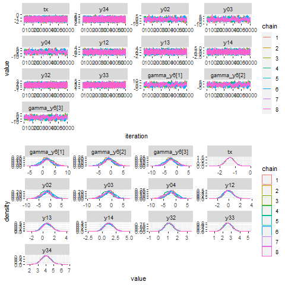

remiod is acronymed from REference-based Multiple Imputation of Ordinal or Binary variables. The purpose of the package is to facilitate the implementation of sensitivity analyses to ordinal/binary response variable with missingness.
Missing data are common in randomised controlled trials (RCTs) and can bias results if not handled appropriately. A statistically valid analysis under the primary missing-data assumptions, usually missing at random (MAR), can be planned, followed by sensitivity analyses under alternative justified assumptions to assess the robustness of results. Reference-based Multiple Imputation (MI) and delta adjustment procedures thus have been developed for analysis under missing-not-at-random (MNAR) assumptions.Tools in this package are developed specifically for reference-based analyses of binary or ordinal responses.
Installation
remiod can be installed from CRAN:
install.packages("remiod")Alternatively, you can install remiod from GitHub:
# install.packages("remotes")
remotes::install_github("xsswang/remiod")Main functions
remiod provides the following main functions:
remiod() # setup for MCMC sampling
extract_MIdata() # extract a specified number of imputed datasets
miAnalyze() # Perform analyses using imputed data, and pool results
list.models() # Listing the sequence of models used for imputation
mcmcplot() # Visualizing the posterior sample
Example
The example analyzes Schizophrenia data from National Institute of Mental Health shizophrenia study:
data(schizow)
test = remiod(formula = y6 ~ tx + y0 + y1 + y3, data = schizow,
trtvar = 'tx', algorithm = 'jags', method="MAR",
ord_cov_dummy = TRUE, n.adapt = 10000, n.chains = 8,
n.iter = 110000, thin = 100, warn = FALSE, seed = 1234)
Visualize the MCMC sample
library(gridExtra)
p1 = mcmcplot(object=test_o, what="trace")
p2 = mcmcplot(object=test_o, what="density")
png(file="trace_dens.png")
grid.arrange(p1, p2, nrow =2)
dev.off()
